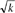

Networking Security Networking Security Networking Security Security Networking Security Networking Security Networking Charlie Kaufman Radia Perlman Mike Speciner Prentice Hall Network Security: Private Communication in a Public World, Second Edition Networking Security Networking Security Networking Security Security Networking Security Networking Security Networking Charlie Kaufman Radia Perlman Mike Speciner Prentice Hall Network Security: Private Communication in a Public World, Second Edition
5.1. Introduction
Random numbers should not be generated with a method chosen at random.
ÂDonald Knuth
A hash (also known as a message digest) is a one-way function. It is considered a function because it takes an input message and produces an output. It is considered one-way because it's not practical to figure out what input corresponds to a given output. For a message digest function to be considered cryptographically secure, it must be computationally infeasible to find a message that has a given prespecified message digest, and it similarly should be impossible to find two messages that have the same message digest. Also (which follows from the previous properties), given a message it should be impossible to find a different message with the same message digest.
We will use the terms hash and message digest interchangeably. The NIST message digest function is called SHA-1, which stands for secure hash algorithm, whereas the MD in the MD2, MD4, and MD5 algorithms stands for message digest. All of the digest/hash algorithms do basically the same thing, which is to take an arbitrary-length message and wind up with a fixed-length quantity.
There's an intuitive notion of randomness that is important to the understanding of message digest functions. We are not trying to create a math book, so our description will be mathematically imprecise. We are merely trying to capture the intuition. We explained before that with secret key cryptography, it is desirable for the mapping from input to output to appear randomly chosen. In other words, it should look (to someone who does not know the secret key) like someone flipped coins to determine, for each possible input, what the output should be. Examples of what this means are:
If 1000 inputs are selected at random, any particular bit in the 1000 resulting outputs should be on about half the time. Each output should have, with high probability, about half the bits on. Any two outputs should be completely uncorrelated, no matter how similar the inputs are. So for instance, two inputs that differ by only one bit should have outputs that look like completely independently chosen random numbers. About half the bits in the two outputs should differ.
This sort of randomness is important for message digests as well. It is true that someone who knows the message and the digest function can calculate the output, and therefore the output is certainly provably not generated by flipping coins. But ignoring that, the output should look random. It should not be possible, other than by computing the message digest, to predict any portion of the output. And in particular it should be true that, for any subset of bits in the message digest, the only way of obtaining two messages with the same value in those bits would be to try messages at random and compute the message digest of each until two happened to have the same value. Given this property, a secure message digest function with n bits should be derivable from a message digest function with more than n bits merely by taking any particular subset of n bits from the larger message digest.
There certainly will be many messages that yield the same message digest, because a message can be of arbitrary length and the message digest will be some fixed length, for instance 128 bits. For instance, for 1000-bit messages and a 128-bit message digest, there are on the average 2872 messages that map to any one particular message digest. So certainly, by trying lots of messages, one would eventually find two that mapped to the same message digest. The problem is that "lots" is so many that it is essentially impossible. Assuming a good 128-bit message digest function, it would take trying approximately 2128 possible messages before one would find a message that mapped to a particular message digest, or approximately 264 messages before finding two that had the same digest (see The Birthday Problem, below).
An example use of a message digest is to fingerprint a program or document to detect modification of it. If you know the message digest of the program (and store the message digest securely so that it can't be modified, and compute the message digest of the program before running it, and check to make sure that it matches the stored value), then nobody will be able to modify the program without being detected, because they will not be able to find a different program with the same message digest.
How many bits does the output of a message digest function have to be in order to prevent someone from being able to find two messages with the same message digest? Well, if the message digest has m bits, then it would take only about 2m/2 messages, chosen at random, before one would find two with the same value. So if there were a 64-bit message digest function, it would only take searching 232 messages before one could find two with the same value, and it is feasible to search 232 messages. That is why message digest functions have outputs of at least 128 bits, because it is not considered feasible to search 264 messages given the current state of the art.
|
If there are 23 or more people in a room, the odds are better than 50% that two of them will have the same birthday. Analyzing this parlor trick can give us some insight into cryptography. We'll assume that a birthday is basically an unpredictable function taking a human to one of 365 values (yeah yeah, 366 for you nerds).
Let's do this in a slightly more general way. Let's assume n inputs (which would be humans in the birthday example) and k possible outputs, and an unpredictable mapping from input to output. With n inputs, there are n(n-1)/2 pairs of inputs. For each pair there's a probability of 1/k of both inputs producing the same output value, so you'll need about k/2 pairs in order for the probability to be about 50% that you'll find a matching pair. That means that if n is greater than

, there's a good chance of finding a matching pair.
|
If cryptographers were happy with message digest functions that merely made it infeasible to find a message with a particular prespecified digest (rather than being worried about being able to find any pair with the same digest), then a 64-bit digest would suffice.
Why are we worried about someone being able to find any two messages with the same message digest, instead of only worrying about finding a message with a particular prespecified message digest? In most applications, to subvert a system an attacker has to find a misleading message whose message digest matches that of a pre-existing message. However, there are cases where being able to find two messages with the same message digest is a threat to the security of the system.
Suppose Alice wants to fire Fred, and asks her diabolical secretary, Bob, who happens to be Fred's friend, to compose a letter explaining that Fred should be fired, and why. After Bob writes the letter, Alice will read it, compute a message digest, and cryptographically sign the message digest using her private key. Bob would like to instead write a letter saying that Fred is wonderful and his salary ought to be doubled. However, Bob cannot generate a message digest signed with Alice's key. If he can find two messages with the same message digest, one that Alice will look at and agree to sign because it captures what she'd like it to say, and one that says what Bob would like it to say, then Bob can substitute his own message after Alice generates the signed message digest.
Suppose the message digest function has only 64 bits, and is a good message digest function in the sense of its output looking random. Then the only way to find two messages with the same message digest would be by trying enough messages so that by the birthday problem two would have the same digest.
If Bob started by writing a letter that Alice would approve of, found the message digest of that, and then attempted to find a different message with that message digest, he'd have to try 264 different messages. However, suppose he had a way of generating lots of messages of each type (type 1Âthose that Alice would be willing to sign; type 2Âthose that Bob would like to send). Then by the birthday problem he'd only have to try about 232 messages of each type before he found two that matched. (See Homework Problem 3.)
How can Bob possibly generate that many letters, especially since they'd all have to make sense to a human? Well, suppose there are 2 choices of wording in each of 32 places in the letter. Then there are 232 possible messages he can generate. For example:
Type 1 message
I am writing {this memo|} to {demand | request | inform you} that {Fred | Mr. Fred Jones}
{must |} be {fired | terminated}{at once | immediately}. As the {July 11 | 11 July} {memo | memorandum}
{from | issued by} {personnel | human resources} states, to meet {our | the corporate}
{quarterly | third quarter} budget {targets | goals}, {we must eliminate all discretionary spending |
all discretionary spending must be eliminated}.
{Despite | Ignoring} that {memo | memorandum | order}, Fred {ordered | purchased} {PostIts
| nonessential supplies} in a flagrant disregard for the company's {budgetary crisis | current
financial difficulties}.
Type 2 message
I am writing {this letter | this memo | this memorandum | } to {officially | } commend Fred
{Jones | } for his {courage and independent thinking | independent thinking and courage}. {He |
Fred} {clearly | } understands {the need | how} to get {the | his} job {done | accomplished} {at all
costs | by whatever means necessary}, and {knows | can see} when to ignore bureaucratic {nonsense
| impediments}. I {am hereby recommending | hereby recommend} {him | Fred} for {promotion
| immediate advancement} and {further | } recommend a {hefty | large} {salary |
compensation} increase.
There are enough computer-generatable variants of the two letters that Bob can compute message digests on the various variants until he finds a match. It is within computational feasibility to generate and test on the order of 232 messages, whereas it would not be feasible to deal with 264 messages.
As we will see in Chapter 6 Public Key Algorithms, the math behind RSA and other public key cryptographic algorithms is quite understandable. In contrast, message digest functions are like alchemy. It's a bunch of steps that each mangle the message more and more. The functions sound like a bunch of people got together and each person had some idea for mangling the message further. "And now let's swap every bit with the complement of the bit 11 bits to the right!" "How about let's multiply every set of 12 adjacent bits by the constant 384729?" "How about we throw in I(newt)?" And every suggestion is adopted by the group. It is possible to follow all the steps, but the incomprehensible part is why this particular shuffling of the message is done, and why it couldn't be simpler and yet just as secure.
A plausible way of constructing a message digest function is to combine lots of perverse operations into a potential message digest function, and then play with it. If any patterns are detected in the output the function is rejected, or perhaps more perverse operations are folded into it.
Ideally, the message digest function should be easy to compute. One wonders what the "minimal" secure message digest function might be. It is safer for a function to be overkill, in the sense of shuffling beyond what it necessary, but then it is harder to compute than necessary. The designers would rather waste computation than discover later that the function was not secure. Just as with secret key algorithms, the digest algorithms tend to be computed in rounds. It is likely that the designers find the smallest number of rounds necessary before the output passes various randomness tests, and then do a few more just to be safe.
There is an interesting bit of folklore in the choice of constants in cryptographic algorithms. Often a "random number" is needed. If the designer of the algorithm chooses a specific number without explanation as to where that number came from, people are suspicious that there might be some hidden flaw that the designer of the algorithm wishes to exploit, and will be able to because the designer knows some hidden properties of that choice of number. Therefore, often the algorithm designers specify how they chose a particular random number. It is often done based on the digits of π or some other irrational number. There was also a book published in the 1930s of random numbers generated from a mechanically random source. People have used some of the numbers in that as well on the theory that cryptography was not well understood then so it is inconceivable that someone could have planted special numbers.
At the end of this chapter we'll describe the major hash functions which have been proposed as standards. Ron Rivest designed MD2, MD4, and MD5. These are all documented in RFCs (1319, 1320, and 1321). In MD2 all operations are done with octets (the microprocessors at the time operated on octets), whereas the other standards operate on 32-bit words (today's microprocessors efficiently compute with 32-bit quantities). In fact, now that there are 64-bit microprocessors, it's quite possible a new MD algorithm optimized for that architecture will be developed.
|